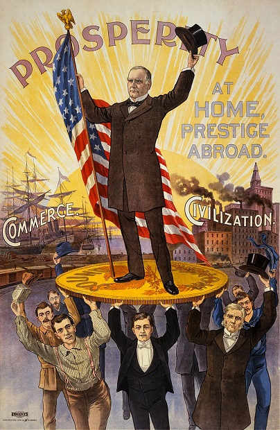

Критика социальных государств
В психопаспорте наблюдается критика социальных государств.
Она проявляется в представлении населения как геодонистически ориентированных конформистов которые из за отсутсвия социальных конфликтов и экзистенциальных проблем потеряли толерантность к стрессу ввиду закобаленности тоталитарным государством лишившись возможности проявлять свою политическую активность.
Что привело к увелечению социальной напряжённости из за дихотомии населения на психически здоровых и потенцилаьно опасных латентных преступников, что привело субсионарное население к невозможности противостоять проблемам ввиду отсуствия негативного опыта и для устранения этих угроз оно опирается на помощь государства предоставляя вакуум власти и акумулируемую их жизнедеятельностью пользу управляющей власти, которая в свою очередь создаёт "зоны исключений" правовых норм для безнаказанного негативного санкционирования опасных для общества и в первую очередь для нынешнего правительства субьектов (Концепция зон исключений Карла Шмидта).
Обеспечевая социальную стабильность и лояльность населения социально ориентированной эгалитарной политикой направленной на обеспечение эвдомонистических нужд своего населения которое приводит к потере пасионарных порывов в обществе абсолютизируя гедонистическую этику которая поддерживается если у индивидов нет каких либо дивиаций от общественной утилитарной морали, которая может привести к инакомыслию и в дальнейшем к зарождении опозиции к действующей власти, что приводит к потере плюрализма и иновационных преобразований основанных на здоровой конкуренции идей и долгосрочной стратегической пользе, заменяя её на деятельность мотивированную получением тактической выгоды, которая используется для приобретения экономических благ,а не для развития общественных институтов.(Концепция "Последних людей" Фридрих Ницше)